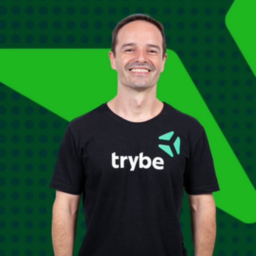

1.2 - Com quem você aprenderá?
Conheça os profissionais que irão guiar sua jornada no curso de Node.js.
Neste curso, você terá a oportunidade de aprender com uma equipe de especialistas com sólida experiência em desenvolvimento de software. Cada professor traz um profundo conhecimento técnico e prática do mercado para ajudá-lo a evoluir nessa jornada de aprendizado.
Gabriel Dalseco (Coruja) Engenheiro mecânico com pós-graduação em Arquitetura de Software, possui mais de 4 anos de experiência no setor de educação, integrando tecnologia e aprendizado. Leciona disciplinas como Node.js (JavaScript e TypeScript) e outras tecnologias back-end, como Java. Atualmente, está empenhado em explorar novas formas de ensino, combinando didática prática e inovação, com foco em tornar a jornada de aprendizado em programação mais acessível e motivadora. |
|
 |
Henrique Baeta Programador e Educador com mais de 10 anos de experiência. Formado pela Trybe em Desenvolvimento de Software FullStack, com domínio em JavaScript e Python. |
Com a orientação dessa equipe, o curso oferece uma abordagem clara e prática das tecnologias mais utilizadas no desenvolvimento de software. Você aprenderá a arquitetar e construir suas próprias APIs Web utilizando Node.js de forma eficiente.
Minhas anotações
Atalhos: ← → navegar · Ctrl K ou / buscar